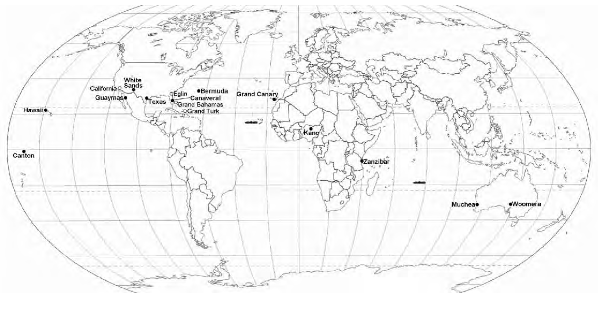
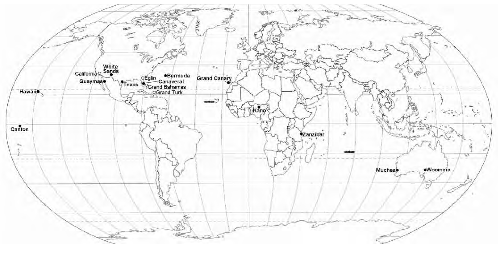
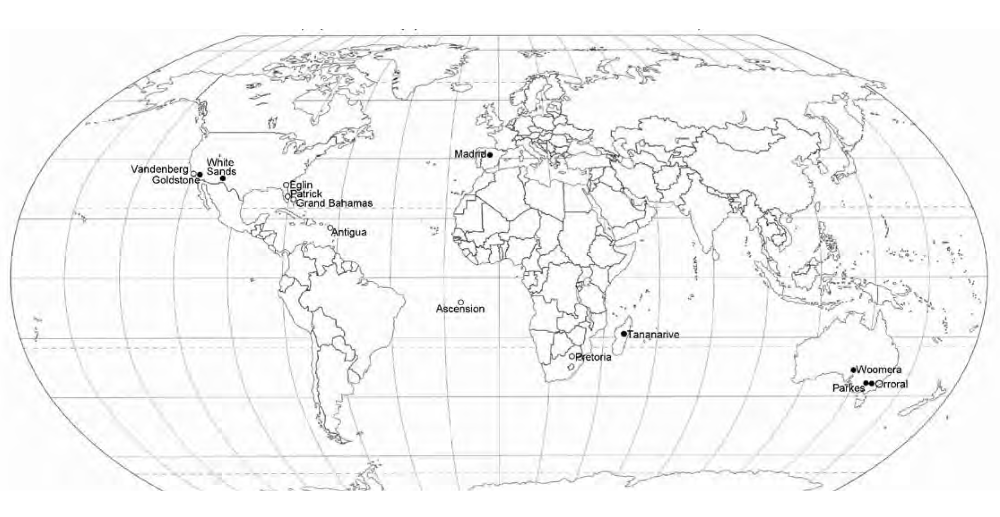
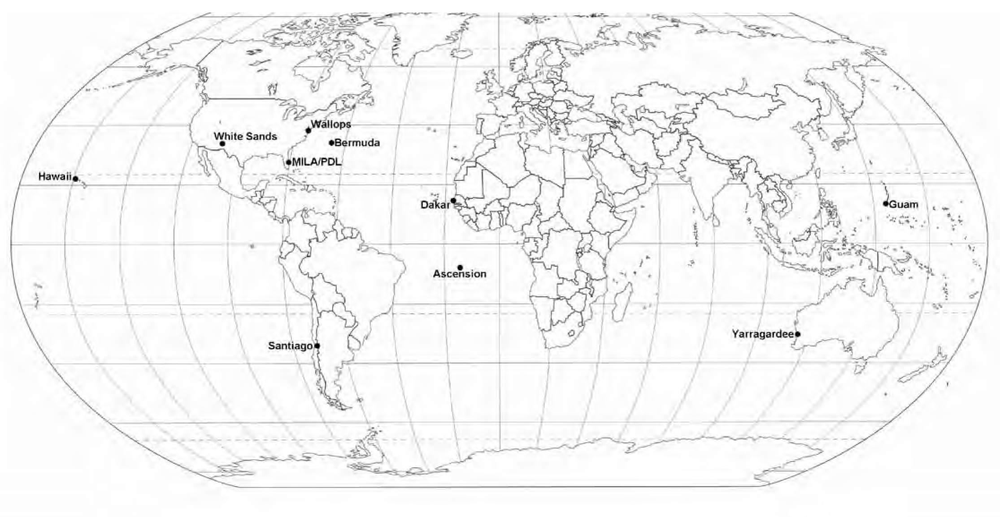

The Satellite Tracking And Data Acquisition Network (early 1960s-mid 1970s)The Mercury Spaceflight Network (early 1960s)

The Manned Spaceflight Network (mid 1960s) (Gemini)

The Manned Spaceflight Network (late 1960s-early 1970s) (Apollo Primary Stations)

The Manned Spaceflight Network (late 1960s-early 1970s) (Apollo Support Stations: DOD & Others)The Spaceflight Tracking and Data Network (mid 1970s-early 1980s)

The Spaceflight Tracking and Data Network (mid 1980s-early 1990s)